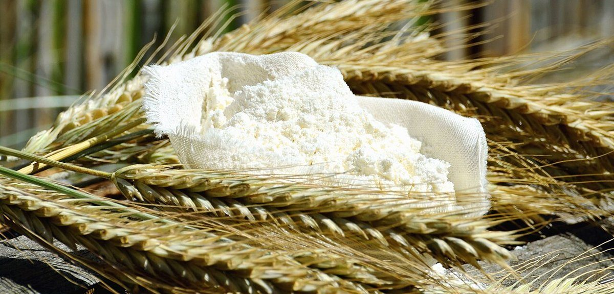
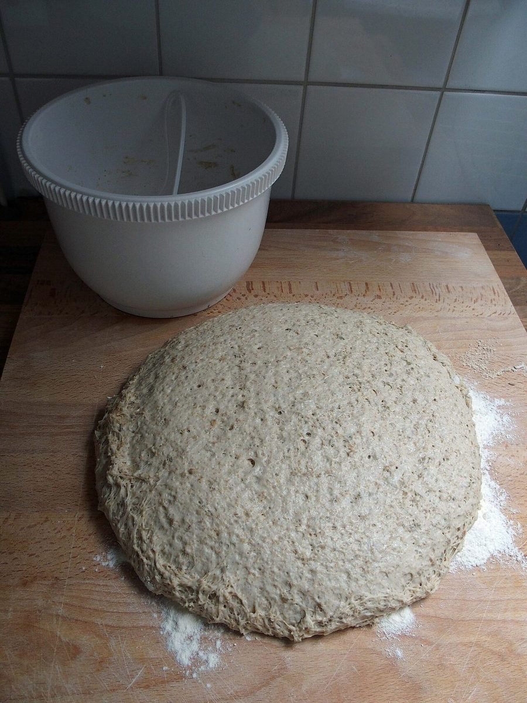
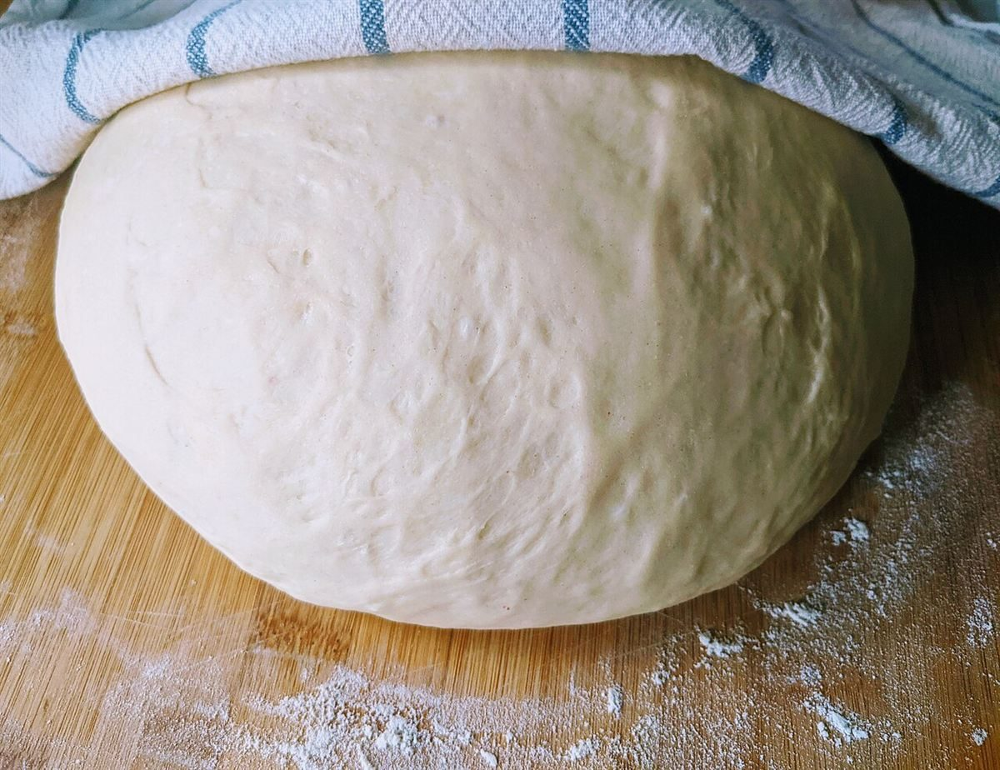

ベーカリー / 滋賀県草津市
levainlupinlevain
656文字・合わせて17
滋賀県草津市のベーカリー「levain lupin levain」のご案内ページです。営業時間やメニューなど、詳しいことは準備中。まずはInstagramをのぞいてみてください。
制作側の連想
両端がそろう、三語の屋号。
このページの作りは、制作側の連想です。お店の理念・由来とは無関係です。「levain」「lupin」「levain」と、同じ語が両端に立って真ん中をはさむ形が、本棚のブックエンドのように見えました。そこで画面の左右にも「levain」を立て、真ん中にお店のご案内を置いています。
左の levain仕込みのイメージ



lupinご案内
| 屋号 | levain lupin levain |
|---|---|
| 業種 | ベーカリー |
| 所在地 | 〒525-0063 滋賀県草津市南山田町1051-3 |
| 電話 | 070-2825-6318 |
| 営業時間 | 準備中 |
| 定休日 | 準備中 |
| ご予約 | 準備中 |
| 駐車場 | 準備中 |
| SNS | Instagram @levainlupinlevain |
確認できているのは、屋号・所在地・電話番号・Instagramです。そのほかは準備中です。
右の levain焼き上がりのイメージ


真ん中の一枚
火の入った窯のイメージ
左の写真は粉や生地、右の写真は焼き上がりのイメージ、この一枚は窯のイメージです。どれもフリー素材で、お店の写真ではありません。実際の写真は、ご提供いただいたものに差し替えます。